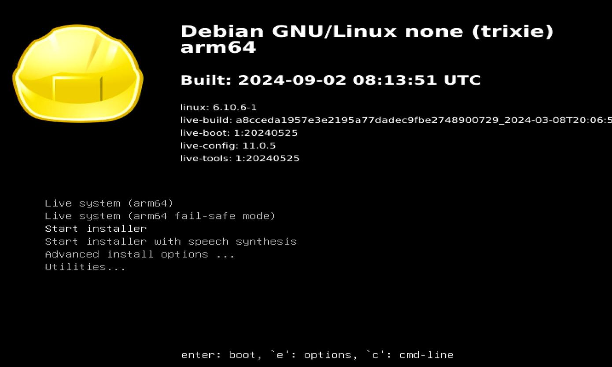
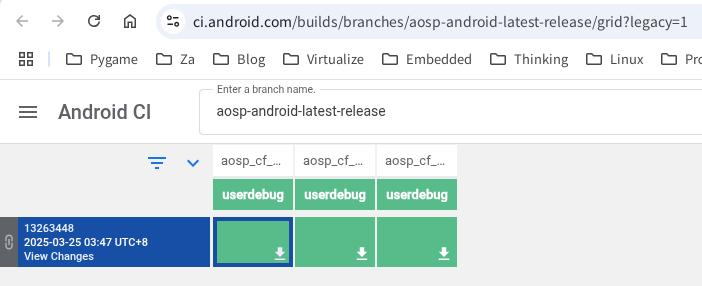
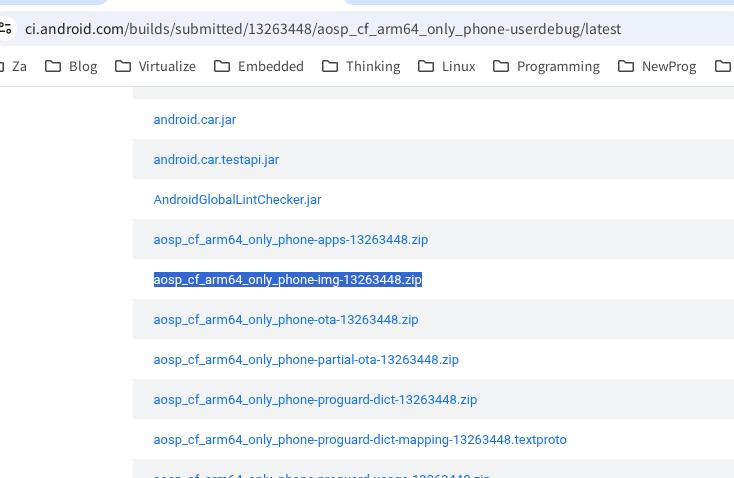

20250424
1. cuttlefish(Debian testing)
Write image:
sudo dd if=/media/nfs/debian-testing-arm64-DVD-1.iso of=/dev/sda bs=10M && sudo sync

Using live cd for text installer.
After installation, bootloader is not OK.
fs0:
cd EFI\debian
grubaa64.efi
Then you could see the grub items and bootup.
apt update -y
apt upgrade -y
# cat /etc/apt/sources.list
# 默认注释了源码仓库，如有需要可自行取消注释
deb http://mirrors.ustc.edu.cn/debian testing main contrib non-free non-free-firmware
# deb-src http://mirrors.ustc.edu.cn/debian testing main contrib non-free non-free-firmware
deb http://mirrors.ustc.edu.cn/debian testing-updates main contrib non-free non-free-firmware
# deb-src http://mirrors.ustc.edu.cn/debian testing-updates main contrib non-free non-free-firmware
# backports 软件源，请按需启用
# deb http://mirrors.ustc.edu.cn/debian testing-backports main contrib non-free non-free-firmware
# deb-src http://mirrors.ustc.edu.cn/debian testing-backports main contrib non-free non-free-firmware
For installation OK, do following:
apt remove raspi-firmware
mv /etc/initramfs/post-update.d/z50-raspi-firmware /root
apt remove plymouth culmus
apt upgrade -y
reboot
After reboot, no screen output.
apt install -y lightdm xfce4 xfce4-panel xfce4-session xfce4-settings xfce4-taskmanager xfce4-screenshooter xfce4-goodies xfce4-cpufreq-plugin
# vim /etc/lightdm/lightdm.conf
autologin items.
# groupadd -r autologin
# gpasswd -a username autologin
Build/Install cuttlefish, then reboot:
root@debian:~# qemu-aarch64 --version
qemu-aarch64 version 9.2.93 (Debian 1:10.0.0~rc3+ds-2)
Copyright (c) 2003-2025 Fabrice Bellard and the QEMU Project developers
root@debian:~# uname -a
Linux debian 6.12.22-arm64 #1 SMP Debian 6.12.22-1 (2025-04-10) aarch64 GNU/Linux
root@debian:~# cat /etc/issue
Debian GNU/Linux trixie/sid \n \l
Download image:

Get the file(aosp_cf_x86_64_phone-img-xxxxxx.zip):

Get the cvd-host_package.tar.gz and aosp_cf_arm64_only_phone-img-13263448.zip:
scp test@192.168.1.80:/media/sdb/lineage/cf13/./out/host/linux_bionic-arm64/cvd-host_package.tar.gz .
scp dash@192.168.1.208:~/下载/aosp_cf_arm64_only_phone-img-13263448.zip .
Extrace the files:
test@debian:~/cf13$ unzip ../aosp_cf_arm64_only_phone-img-13263448.zip
Archive: ../aosp_cf_arm64_only_phone-img-13263448.zip
inflating: android-info.txt
inflating: fastboot-info.txt
inflating: boot.img
inflating: bootloader
inflating: init_boot.img
inflating: userdata.img
inflating: vbmeta.img
inflating: vbmeta_system.img
inflating: vbmeta_system_dlkm.img
inflating: vbmeta_vendor_dlkm.img
inflating: vendor_boot.img
inflating: super.img
New installation:
test@debian:~$ cd cfown/
test@debian:~/cfown$ ls
bin etc lib64 nativetest64 usr
test@debian:~/cfown$ unzip ../aosp_cf_arm64_phone-img-eng.root.zip
Archive: ../aosp_cf_arm64_phone-img-eng.root.zip
extracting: android-info.txt
inflating: boot.img
inflating: bootloader
inflating: init_boot.img
inflating: userdata.img
inflating: vbmeta.img
inflating: vbmeta_system.img
inflating: vendor_boot.img
inflating: super.img
test@debian:~/cfown$ ls
android-info.txt bootloader lib64 userdata.img vbmeta_system.img
bin etc nativetest64 usr vendor_boot.img
boot.img init_boot.img super.img vbmeta.img
test@debian:~/cfown$
Losts of problem under debian testing, switch to ubuntu24.04.
2. cuttlefish ubuntu22.04
Upgrade to ubuntu24.04:
sudo do-release-upgrade
Use arm64only.
3. some useful material
Booting a Android Cuttlefish guest directly with QEMU:
https://linaro.atlassian.net/wiki/spaces/ORKO/pages/29093823191/Booting+a+Android+Cuttlefish+guest+directly+with+QEMU
start-avm:
https://github.com/slp/start-avm
cvd2img
https://github.com/slp/cvd2img
cuttlefish image -> cvd2img -> qemuImageFile -> Qemu(mac mini)